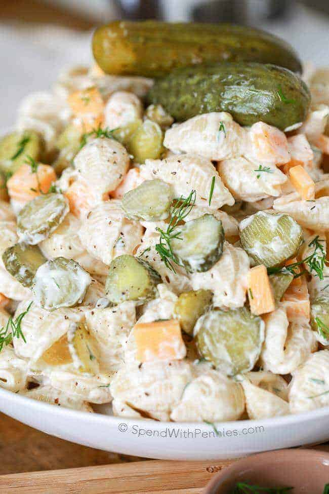

Dill Pickle Pasta

It's tangy and filling.
A great alternative to Dill Pickle Potato salad!
Ingredients
- 1/2 pound dry shell pasta
- 3/4 cup pickles
- 2/3 cup cheddar cheese
- 3 tabletspoons white onion
- 2 tablespoons fresh dill
- 1/2 cup pickle juice
- Boil pasta al dente according to package directions. Run under cold water to stop cooking.
- Toss cold pasta with about ½ cup of pickle juice and set aside for about 5 minutes. Drain & discard pickle juice.
- Combine all dressing ingredients in a small bowl and mix well.
- Toss all ingredients in a large bowl. Refrigerate at least 1 hour before serving.